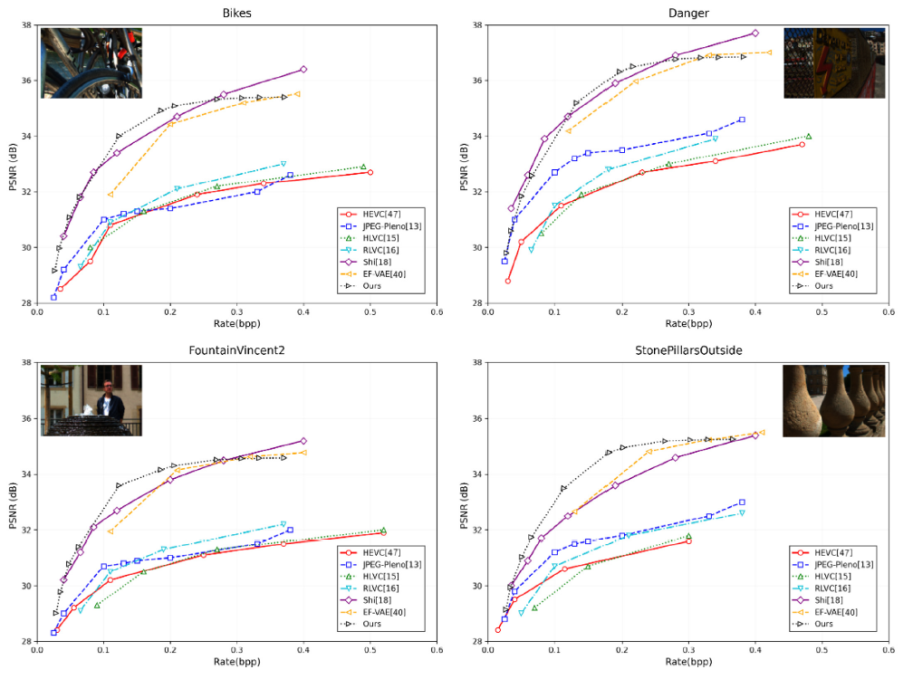
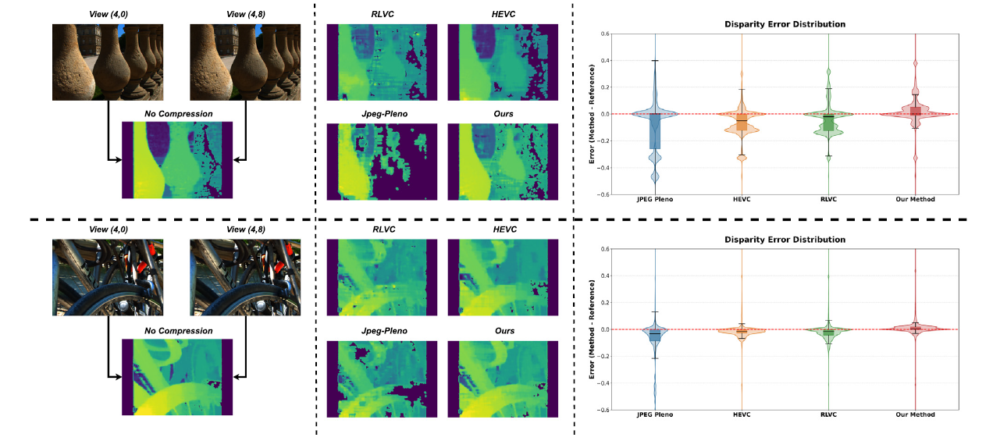

Bikes


Light field (LF) imaging captures spatial and angular information, offering a 4D scene representation enabling enhanced visual understanding. However, high dimensionality and redundancy across spatial and angular domains present major challenges for compression, particularly where storage, transmission bandwidth, or processing latency are constrained. We present a novel Variational Autoencoder (VAE)-based framework that explicitly disentangles spatial and angular features using two parallel latent branches. Each branch is coupled with an independent hyperprior model, allowing more precise distribution estimation for entropy coding and finer rate–distortion control. This dual-hyperprior structure enables the network to adaptively compress spatial and angular information based on their unique statistical characteristics, improving coding efficiency. To further enhance latent feature specialization and promote disentanglement, we introduce a mutual information-based regularization term that minimizes redundancy between the two branches while preserving feature diversity. Unlike prior methods relying on covariance-based penalties prone to collapse, our information-theoretic regularizer provides more stable and interpretable latent separation. Experimental results on publicly available LF datasets demonstrate our method achieves strong compression performance, yielding an average BD-PSNR gain of 2.91 dB over HEVC and high compression ratios (e.g., 200:1). Additionally, our design enables fast inference, with a total end-to-end time over 19x faster than the JPEG Pleno standard, making it well-suited for real-time and bandwidth-sensitive applications. By jointly leveraging disentangled representation learning, dual-hyperprior modeling, and information-theoretic regularization, our approach offers a scalable, effective solution for practical light field image compression.

Rate-Distortion (RD) curve comparing the performance of our proposed VAE-based light field compression method against HEVC, RLVC, HLVC, JPEG-Pleno, and Shi’s method . Our method consistently outperforms the others across most datasets in terms of compression efficiency and image reconstruction quality, except for Shi’s method, which shows superior results on a few specific datasets.
Disparity map comparisons and error distributions for two EPFL scenes for four methods: RLVC, HEVC, JPEG-Pleno, and our proposed approach
Bikes
Danger


Fountain


Pillars


Jpeg-Pleno
Ours
RLVC


@article{takhtardeshir5294260dualf,
title={Dualf-D: Disentangled Dual-Hyperprior Approach for Light Field Image Compression},
author={Takhtardeshir, Soheib and Olsson, Roger and Guillemot, Christine and Sj{\"o}str{\"o}m, M{\aa}rten},
journal={Available at SSRN 5294260}
}